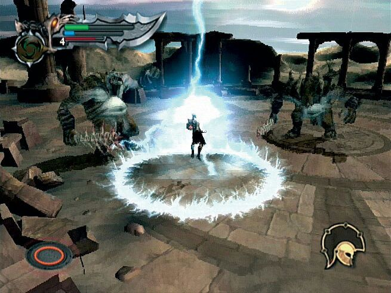
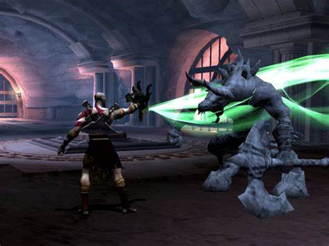

Fúria de Poseidon
A primeira magia que Kratos adquire é a Fúria de Poseidon, dada a ele por o próprio Poseidon, para que Kratos matasse a Hydra. A magia consiste em o usuário soltar um campo de raios do seu corpo, quanto mais atualizado é o poder maior é esse campo e mais poderoso o raio se torna
Olhar da Medusa
Esse é o segundo poder que Kratos adquire, não é necessariamente um poder, mas sim uma espécie de item. A cabeça da Medusa foi uma conquista decorrente do desafio proposto por a deusa Afrodite que o ordenou que a matasse e arrancasse a cabeça da criatura, é um poder que leva tempo para fazer efeito nos inimigos.